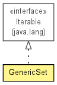

toxi.util.datatypes
Class GenericSet<T>
java.lang.Object
 toxi.util.datatypes.GenericSet<T>
toxi.util.datatypes.GenericSet<T>
- All Implemented Interfaces:
- java.lang.Iterable<T>
public class GenericSet<T>
- extends java.lang.Object
- implements java.lang.Iterable<T>

| Methods inherited from class java.lang.Object |
equals, getClass, hashCode, notify, notifyAll, toString, wait, wait, wait |
GenericSet
public GenericSet(java.util.Collection<T> items)
GenericSet
public GenericSet(T... obj)
add
public boolean add(T obj)
addAll
public boolean addAll(java.util.Collection<T> coll)
clear
public void clear()
contains
public boolean contains(T obj)
copy
public GenericSet<T> copy()
getCurrent
public T getCurrent()
getItems
public java.util.ArrayList<T> getItems()
iterator
public java.util.Iterator<T> iterator()
- Specified by:
iterator in interface java.lang.Iterable<T>
pickRandom
public T pickRandom()
pickRandomUnique
public T pickRandomUnique()
seed
public GenericSet<T> seed(long seed)
setRandom
public void setRandom(java.util.Random rnd)
size
public int size()